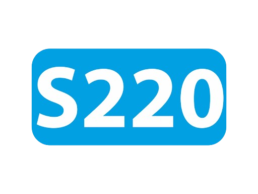

indulás


| ÉRKEZŐ VONATOK |
|---|
| INFORMÁCIÓK |
| Abfahrt | INDULÓ VONATOK | Departures | |
||
|---|---|---|---|---|---|
| Tervezett indulás | Várható indulás |
Vonat | Hová | Vg. | |
| 19:30 | 19:35 | |
Szeged | 5 | |
| 19:30 | 19:34 | |
Budapest-Nyugati | 3 | |
| 19:34 |  | Lakitelek | Lakitelek | 2 | |
| 19:36 |
|
Kecskemét | 3 | ||
| 19:38 |
|
Szentes | - | ||
| 19:44 | 19:45 |
|
Külsőhalas | Kiskunhalas - Kiskunfélegyháza | 3 |
| 20:30 | 20:31 |
| Szeged | 5 | |
| 20:31 |
| Budapest-Nyugati | 3 | ||
| 21:30 |
| Szeged | 5 | ||
| 21:31 |
| Budapest-Nyugati | 3 | ||
| 21:38 |
|
Szentes | - | ||
| 22:33 |
| Szeged vá (Indóház tér) | 3 | ||